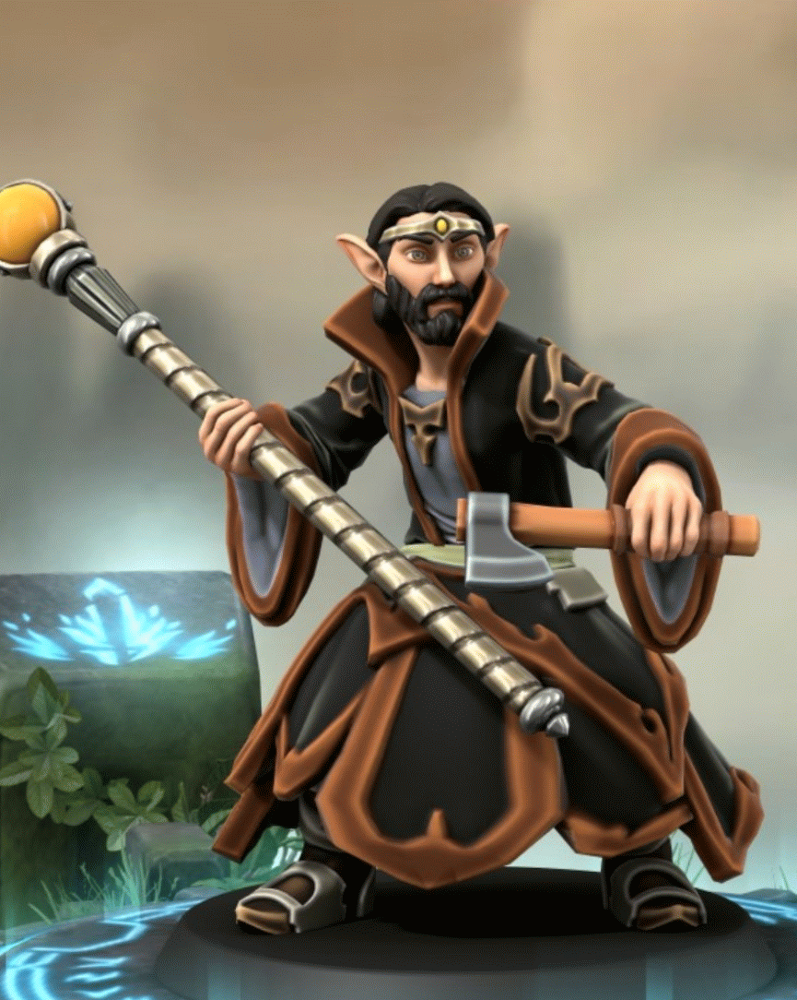
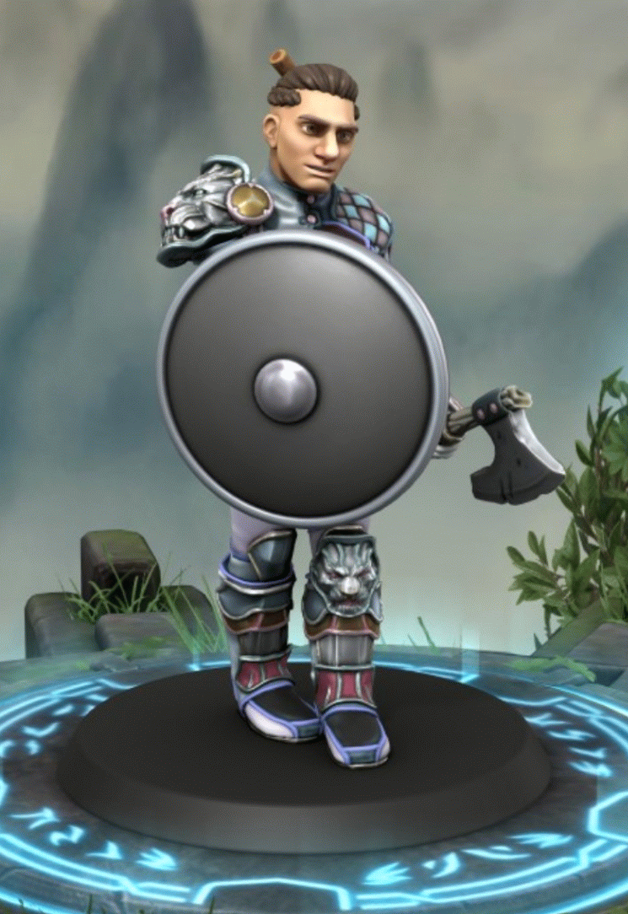

-
Cadu DevAll
- Elfo
- Mago
Mestre das Artes da programação, o mago branco - conjurador do HTML, CSS, JS, e muitas outras magias - é um profundo conhecedor dos códigos-fonte dos sistemas mais simples até os mais complexos.
-
Beto DevAll
- Elfo
- Mago
Mestre das Artes da programção, o mago marrom - conjurador do HTML, CSS, JS, e muitas outras magias - é também um profundo conhecedor dos códigos-fonte dos sistemas mais simples até os mais complexos.
-
Lóine WindCallur
- Meio Elfo
Detentora do maravilhoso poder da comunicação, a Barda encanta a todos com suas mensagens doces e divertidas, fazendo com que quem as recebe, sinta uma grande empolgação em participar das mais diversas aventuras.
-
Melina Hunkooun
- Gnomo
- Druida
Misteriosa figura, a druida domina as áreas do conhecimento humano. Atua nos bastidores guilda, aconselhando, orientando e protegendo a todos.
-
Guga QwickAid
- Halfling
- Paladino
O halfling, também conhecido como hobbit ou pequenino, mas não se engane com sua baixa estatura. Por ser um paladino é defensor da honra e da verdade. Possui habilidades especiais e auxilia na resolução de problemas.
-
Pablo GodSent-Sent
- Anão
- Clérigo
Possuidor de grande conhecimento e bom coração, o clerigo é especialista em auxiliar a quem precisa. Pode curar os aliados e causar danos aos inimigos.
-
Nooby FrontEndyhr
- Humano
- Guerreiro
Ainda sem muitas habilidades e conhecimentos, a humana traz a força e a vontade de conquistar, através da beleza e da funcionalidade. Busca, acima de tudo, ser melhor a cada dia.
-
Ruk BackEndyhr
- Humano
- Guerreiro
Membro da família rival de FrontEndyhr, na verdade não tem rixas com eles. Igualmente ainda sem muitas habilidades e conhecimentos, o humano tem o intuito de fazer com que tudo funcione de modo satisfatório, mesmo que para isso ele precise atuar em áreas pouco conhecidas.